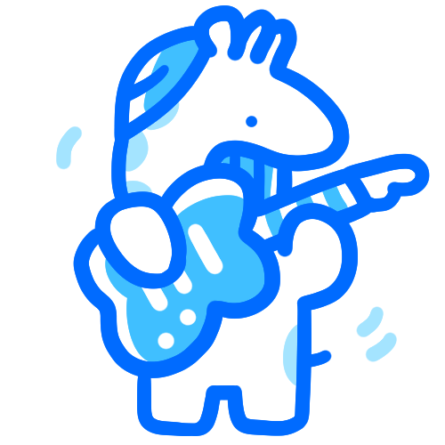

밴드 적성 검사
당신의 결과는...

베이스
묵직하고 안정적인 서포트를 원한다면?
베이스가 적격!
기타보다 날카롭지 않으며, 가장 낮은 음을 담당하면서도 곡을 묶어주는 역할을 하는 베이스 포지션이 어울립니다! 조화를 중시하는 당신인 만큼 이 포지션만큼 어울릴 만한게 없죠. 밴드 내 트러블이 나면 남는건 베이스라는 농담이 있을 정도로 중립적 성향을 가진 사람들이 이 포지션을 선호하기도 해요.
이 포지션은 어때요?

드럼
정확하고 묵직한 리듬감이 끌린다면 역시 밴드의 중심을 잡아주는 드럼을 잡아 보는 것도 좋은 포지션일거예요!
나와 잘 어울리는 포지션
리드 기타
리드기타의 폭주를 잡아줄 뿐더러 리드기타를 쫓아갈 수 있는건 베이스 포지션이죠! 둘도 없는 친구가 될거예요!